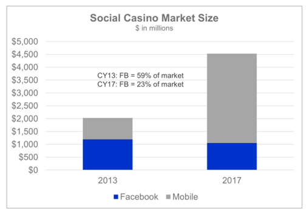
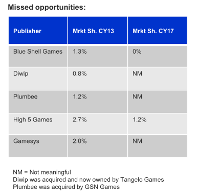
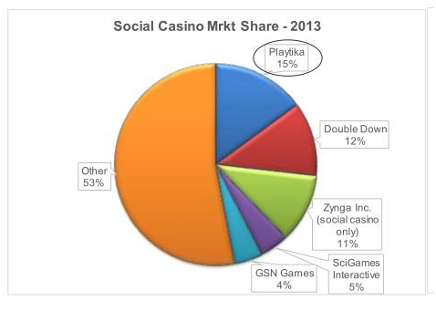
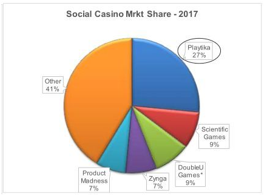
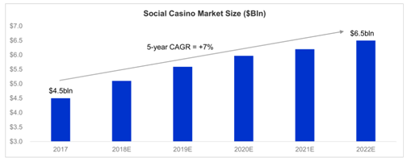
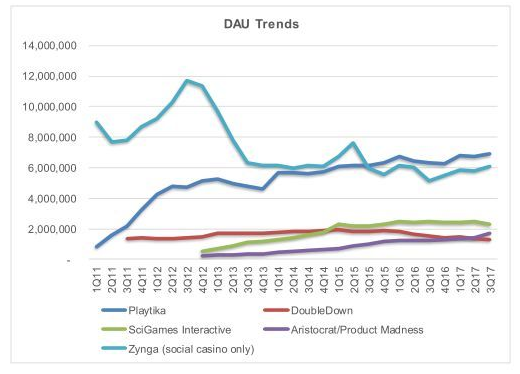
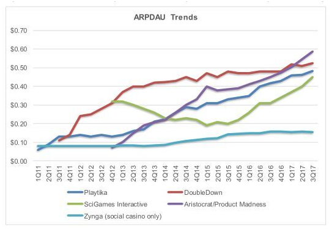

社交博彩类游戏市场一直受到业内人士的关注，正如整个手游行业一样，这个细分市场在成熟市场也已经走过了人口红利时期，那么这个市场过去发生了什么变化，未来的趋势又是什么？
过去5年的变化
整个社交博彩类游戏市场在过去5年增长迅速，从2012年的13亿美元上涨到2017年的45亿美元，复合年增长率达到28%。随着移动平台的崛起，社交博彩类游戏大爆发，受到了厂商的热捧，催生了一个又一个收购案。

2012-2017博彩类游戏市场规模变化
1. 转移到移动平台，反应慢的被淘汰
从2012年到2017年，博彩类游戏市场最大的变化是从PC端转移到移动端。其实这不仅是博彩类游戏这一细分市场的情况，整个游戏行业亦是如此。

2013和2017博彩类游戏市场FB和移动市场比例
在2012年&2013年，Facebook是博彩类游戏市场的最主要的平台。就2013年而言，Facebook占了整个博彩类游戏市场近6成的份额(59%)，到了2017年，Facebook所占的份额仅剩下2成左右(23%)，主要被移动平台所取代。
在Facebook鼎盛时期，很多公司也赚的盆满钵满， 但面对移动这个新兴平台，很多公司反应慢，等反应过来时，已经被远远甩在后面或被淘汰出局。

错失机会的公司
比如，Blue Shell Games 2013年占了1.3%的市场份额，去年在市场上已经消失了。High 5 Games曾占2.7%的市场份额，已经锐减了一半以上，只剩1.2%的市场份额。Diwip和Plumbee曾经也分别占了0.8%和1.2%的市场份额，但各自被Tangelo Games和GSN Games收购后，在市场上也已没什么分量。最后曾经占2%的市场份额的Gamesys现在也已经变得无关紧要了。
2. Playtika不可撼动的王者地位
2016年，巨人网络在内组成的财团以44亿美元从美国凯撒集团手中收购了Playtika这家社交博彩类游戏公司，创下了迄今为止社交博彩类游戏市场最大的收购案。
这么大手笔的收购，源于该公司一直以来的王者地位。从2013年到2017年这四年间，Playtika的统治地位一直未变，唯一在变的是变得更强。过去四年，这家公司的复合年均增长率达到了41%，远远高于行业22%的平均水平，市场占有率也从2013年15%上涨到去年的27%。
这家公司这么强劲的增长得益其手握的三大王牌，包括全球营收第一的老虎机游戏《Slotomania》,全球营收第一的Bingo游戏《Bingo Blitz》及全球营收第二的扑克游戏《WSOP》。

2013年博彩类公司市场份额占比

2017年博彩类公司市场份额占比
除了Playtika，这四年期间其它头部公司也发生了一些变化。
——2013年，Top 5的公司为Playtika (15%), Double Down (12%), Zynga (11%,只是社交博彩类部分)，SciGames Interactive (5%)及GSN Games (4%)。
——2017年，Top 5的公司为Playtika (27%), Scientific Games (9%), DoubleU Games (9%), Zynga (7%)及Product Madness (7%)。
从2013年到2017年，巨头的垄断地位越发明显，2013年Top 5占博彩类游戏市场的份额不足一半，但到2017年，Top 5的份额已经接近了6成，这意味着，留给其它公司的空间不多了。
3. 收购潮，6年超80亿美元
在博彩类游戏行业，收购显的更为激进和频繁，笔者认为主要因素在于这类游戏的特性。博彩类游戏因为其长生命周期备受厂商的青睐，也正因为用户的高忠诚度导致一款新品很难打入这个用户群体。因此厂商想进入这个市场，一个快速的方式就是收购。从2011年到2017年这过去的6年间，收购金额超过80万亿美元。就去年而言，有2笔重要的收购案：
——12月初，澳大利亚博彩机器制造商Aristocrat宣布收购美国西雅图的社交博彩游戏公司Big Fish Games ，收购总额达9.9 亿美元。这也是Big Fish Games在短短三年之内的第二次被收购，此前一次是美国肯塔基赛马主办方丘吉尔唐斯以8.85亿美元对该公司进行收购。
——IGT以8.25亿美元的价格将社交博彩游戏开发商Double Down出售给了韩国公司DoubleU Games。IGT于2012年斥资5亿美元收购Double Down。
我们可以发现，其实收购博彩类游戏公司是一种很好的投资方式。这两件收购案和2016年巨人网络在内的财团以44亿美元收购Playtika的事件都证明，第一手买家的一个转手就获得了丰厚的回报。或许这也是收购潮如此盛行的原因之一。
未来5年的趋势
据Eilers & Krejcik Gaming的报告，未来5年，到2022年，社交博彩类游戏市场规模复合年增长率为7%，从2017年的45亿美元增长到65亿美元，增长速度明显放缓。

2017-2022博彩类游戏市场规模变化
目前有三大趋势值得我们留意：
1. DAU停止增长，提升付费用户转化率是重点

博彩类游戏公司头部厂商的DAU趋势图
从2011年到2017年Q3，博彩类游戏公司头部厂商的DAU(日活跃用户)已经停止上升，趋于稳定的阶段(上图)，他们目前的主要任务是充分挖掘存量市场的付费潜力。

博彩类游戏公司头部厂商的ARPDAU趋势图
我们再看这些头部厂商的ARPDAU(日活跃用户的平均收益)趋势图，过去六年是不断增长的。在用户红利消失的情况下，提高付费用户的转化率和付费金额就是各大厂的方向和目标，这也是推动这个市场增长的主要动力。
我们对比一下其它品类的付费转化率，就可以看到社交博彩类游戏市场依然拥有巨大空间。亚洲F2P MMO转化率数据：
中国：7-10%
日本：10-12%
韩国：12-15%
《World of Tanks(坦克世界)》据传活跃用户转化成付费用户的比例超过25%。但在社交博彩类游戏市场，据Eilers & Krejcik Gaming预估的数据是约3%。根据他们的估算，这个数据提高一个百分点，那么整个社交博彩类游戏市场规模将有30-35%的提升。
2. 持续性优化能力是关键
据Eilers & Krejcik Gaming对社交博彩类游戏行业过去5年的观察，他们表示在这个领域取得成功不一定非要做出突破性的创举。那些持续增长的公司或成功的新创公司多数是对产品做出多次小改动后获得成功，这不是说好的内容不重要，而是说持续的优化才是关键。具体来说，那些在A/B test阶段就擅长在线运营、预测性分析和机器学习，及擅长用户获取的公司将会获得增长。
3. 公司跨品类布局产品
整个游戏行业发展至今，博彩类游戏公司和非博彩类游戏公司之间的界限逐渐模糊，这两类公司都向对方的领域在渗透。去年开始，这样的消息不断。
——去年澳大利亚赌场公司Aristocrat斥资5亿美元收购了以色列策略手游开发商Plarium，Plarium主要业务是F2P手游，比如《斯巴达：帝国战争》和《维京人：战争部落(Vikings: War of Clans)》等等。
——Playtika的《Vegas Words》融合了老虎机和文字游戏。
——去年，King和博彩类游戏公司Playstudios 达成合作，发行了后者开发的博彩类游戏《Royal House Slots》。
——游族和欧洲社交博彩类手游公司KamaGames去年达成合作，今年1月针对印度市场，发行了棋牌游戏《Poker Champions》。
——今年2月消息，韩国网禅(Webzen)进军社交博彩类游戏市场，即将推出一款老虎机游戏《Hit the 5 Casino – Free Slots》。
无论是博彩类游戏公司还是传统的游戏公司，都需要寻求突破，找到新的增长点。这些大厂之间的相互渗透，尤其是传统游戏厂商向博彩类游戏市场的进军，无疑是加剧了这个市场的竞争。纹桃科技致力于棋牌游戏开发14年，拥有大量棋牌游戏开发运营经验和大批成功案例。
想开发一款迅速盈利的棋牌游戏，欢迎咨询热线电话：18711739336


游戏产品
PRODUCTS

售后服务
SERVICE

技术支持
TECHNOLOGY

运营指导
OPERATING